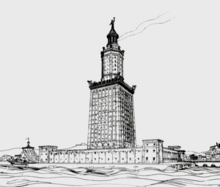

| The Lighthouse of Alexandria was built on the island of Pharos outside the harbour of Alexandria, Egypt c. 300 - 280 BCE, during the reigns of Ptolemy I and II. With a height of over 100 metres (330 ft), the lighthouse was so impressive that it made it onto the established list of the Seven Wonders of the Ancient World.
Although now lost, the structure's lasting legacy, after standing for over 1600 years, is that it gave its Greek name 'Pharos' to the architectural genre of any tower with a light designed to guide mariners. Perhaps influencing later Arab minaret architecture and certainly creating a whole host of copycat structures in harbours around the Mediterranean, the lighthouse was, after the pyramids of Giza, the tallest structure in the world built by human hands.
Alexandria
Alexandria in Egypt was founded by Alexander the Great in 331 BCE, and thanks to its two natural harbours on the Nile Delta, the city prospered as a trading port under the Ptolemaic dynasty (305-30 BCE) and throughout antiquity. A cosmopolitan city with citizens from all over the Greek world, the city had its own assembly and coinage and became a renowned centre of learning.
Around 300 BCE Ptolemy I Soter (r. 323 - 282 BCE) commissioned the building of a massive lighthouse to guide ships into Alexandria and provide a permanent reminder of his power and greatness. The project was completed some 20 years later by his son and successor Ptolemy II (r. 285-246 BCE). The structure only added to the impressive list of things to see at the great city which included the tomb of Alexander, the Museum (an institution for scholars), the Serapeum temple, and the magnificent library.
The Lighthouse
According to several ancient sources, the lighthouse was the work of the architect Sostratus of Cnidus, but he may have been the project's financial backer. The structure was located on the very tip of the limestone islet of Pharos facing the harbours of Alexandria. These two natural harbours were the Great Harbour and the whimsically named Eunostos or 'Harbour of Fortunate Return'. The mainland was linked to the island of Pharos by a causeway, the Heptastadion, which measured around 1,2 km (0.75 miles). The lighthouse, we are informed by a contemporary writer named Poseidippos, was intended to guide and protect sailors and to that end was dedicated to two gods, Zeus Soter (Deliverer) - whose dedicatory inscription on the tower was made with half-metre high letters - and possibly Proteus, the Greek sea god, also known as the 'Old man of the Sea'. |  |